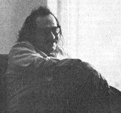

Almost as soon as Little Jane and I started Mother Earth News, we began getting excited messages from folks all over the country: "Do you know about Murray Bookchin?" "Have you read Bookchin?" "Here's a pamphlet by Murray Bookchin, the anarchist ecologist" or simply, "Read Bookchin."
Naturally-being blessed with an open, inquiring mind and recognizing a good thing when so many levelheaded people pointed it out - I ... steadfastly ... ignored ... Murray ... Bookchin. I mean, I had the usual idiotic idea that anarchists were people with bushy, black beards and Molotov cocktails.
And then magnificent, warm Len Krimmerman invited me up to the University of Connecticut as a resource person for an alternatives-in-living conference ... and Murray had received a like invitation ... and he was there ... and my mind was boggled and my heart won.
Murray Bookchin is one of the warmest, most thoughtful and sensible men I've ever met. Under the pen name of Lewis Herber, he's been writing about ecology more years than some of today's staunchest environmentalists are old ... and Murray isn't that old himself (only 50). This is a man, in other words, with vision far into the future.
Murray has published four books - two on ecology-under his pen name. The ecology titles are Our Synthetic Environment and Crisis in Our Cities. Bookchin's fifth book (this time under his real name), Post-Scarcity Anarchism, has just been released by Ramparts Press.
Bookchin has taught ecology and now travels widely to speak on ecological, environmental and social problems at universities across the country.
How long have you been interested in and working on environmental problems?
My own interest in ecology dates back to the early 1950's. At that time a few people - numerically large, but still a definite minority of the literati population of the United States - became very much concerned about what was happening to the environment. We suddenly became aware, in the 50's, of the dramatic changes that were - and are still - being wrought in the world.
Since the end of the Second World War, there have been changes on a scale that are simply phenomenal by comparison with previous periods . . .
And terrifying.
They are terrifying. A second industrial - a third industrial revolution, actually - was taking place at that time. Expansion of the cities, destruction of farmland, encroachment of suburbia on formerly agricultural areas.
A second problem that was becoming very compounded twenty years ago was the change in the diet that people were being exposed to. Chemicalization of the diet, particularly by DDT and other pesticides, was first coming under critical scrutiny at that point. There were hearings being held in Washington - the famous Delaney Committee hearings - and I got hold of a transcript of those hearings and found that the problems examined by the committee reflected my own discontent about the issue.
I was also greatly influenced by a German, Josef Weber. Weber, with an entirely different background - a south German background - pointed out these issues with a number of clarifying remarks and inspired me to start writing about ecological problems in 1952. I've more or less continued since then.
That was a long time before the general public became concerned about the environment.
Yes. Even as late as 1965, I was active with a group of anarchists on New York City's lower East Side. We used the slogan, "Community, Anarchy, Ecology" ... and everyone understood everything but the last word. You had to explain it (short laugh) to people.
Now, of course, the esoteric issue - ecology - of 1965 has become the critical and very familiar social problem of today ... and this impresses me. It impresses me that we are passing from the question of ecology as an issue to a state of ecological outlook. Ecology is no longer an idea, it is a very real concern. For the first time, it involves people on a public scale ... and, collectively, we're developing an ecological point of view.
Ecology has always been an issue, you know, but under a different name. In the 1930's, the famous Schlink book, A Hundred Million Guinea Pigs, went through one edition after another.
I don't know that book.
It was very famous in the 1930s. Callett and Schlink wrote what was essentially a pharmacopoeia of the toxicants that then appeared in food and drugs. The book had a powerful impact. It must have gone through 30 or more printings and was partly responsible for the formation of the consumer movement in the 1930's ... of which Consumer's Research and Consumer's Union are examples.
The problem at that time was essentially considered to be a form of pollution that could be remedied by Congressional action ... by a kind of New Deal for the consumer. People were not that occupied with the environment as a whole. There were a few lonely voices - Lewis Mumford's was one - but people were not that occupied with the environment. They were concerned with poisons that were coming to them through food and drugs ... and they were occupied with changing that situation by legislative means.
So much was taken for granted then that was totally wrong. The people of that time didn't have an ecological outlook. They didn't interpret the problem in terms of the balance of nature and their relationship with the natural world.
And that set us up for bigger problems.
Yes. And those problems grew throughout the late 40's and all through the 50's and the 60's until, today, we're no longer dealing with a number of isolated forms of pollution in foods or in drugs or in the air or whatever. We're dealing with a distortion of the natural cycles. We're dealing with the carbon cycle ... with the nitrogen cycle ... with distortions in the very way in which the natural world is put together. And this, finally, is ecology and - at long last - we recognize that fact.
Now the question that faces us is whether or not we can develop a society that will be ecologically sound. We're learning that we can no longer deal with nature as a separate entity apart from our own social lives. We're also learning that we must develop an attitude as well as a social relationship toward nature ... and this means we must develop a new attitude toward each other. We must develop an ecological interpretation of society ... and, for Western man, this is an enormous undertaking. We shall have to recast our thinking - our mental apparatus - recast our emotional apparatus and, in new ways, fulfill new possibilities within ourselves intellectually and spiritually.
As the Vocations for Social Change people say, "All we want is to change the world completely." Granted that it may be necessary ... it won't be easy. Do we have any precedent for such a plunge?
I believe that we are coming to grips with the problem of nature today in somewhat the same sense that early humanity did when it broke away from the tribal forms - when it left the garden, so to speak - and began to move into a propertied, hierarchical type of civilization.
Now, so-called primitive society was a unified whole ... but it was a very simplified unified whole. Custom had to prevail because life was very precarious. Such a society produced a more all-rounded being but a being more limited in terms of the facets that could be developed. The emergence of hierarchy split this early tribal unity. Hierarchy opposed, first of all, men to women ... it shattered the parity between the sexes ... and led to a form of oppression of women that wasn't even exploitative in all cases although it contained exploitative relationships.
Exploitation, you know, is a subset of oppression. There's a bigger domain of oppression that took place even before exploitation. A most striking example is the subjugation of women and children ... which increasingly crystallized into exploitation only after the original subjugation.
Women, you see, were placed on a different status. Even if they were pampered and given the comforts of life, they were degraded as human beings ... they became objects. They may not even have become instruments of material exploitation, although they were that too ... but the most important thing that happened was that they were reduced to objects.
And then on top of that first split, a second split took place. People were opposed to people. Classes began to replace kinship ties.
And yet a third split from the unity of humanity with nature and human beings with each other took place with the emergence of the town. This emergence first began very delicately with the town more or less in subordination to the countryside ... next in balance with the countryside ... and, finally, with the modern industrial city and the modern commercial city supremely opposed and placed on a hierarchical relationship in a dominant position over the countryside. And now we have an urbanized civilization.
And last, we have the emergence of the state ... which not only opposed a political apparatus to community, but which shattered community , using the city as its playground as it were ... as its medium for development. And the state eventually reached a point where it reduced everybody to a functionary.
The word citoyen - citizen - the classic word of the French Revolution, which replaced the word "brother" in the medieval town, has now disappeared and has even lost its meaning ... and now everybody is really an employee (laugh) of the state.
The concept that people today - in an era of state capitalism when the state has become supreme - are autonomous human beings is ridiculous in the traditional bourgeois interpretation of individual sovereignty. What you have now is everyone reduced to a functionary.
And now we have to overcome the splits?
The splits have to be healed. This is the great theme - ecological theme - of our time. We must overcome the splits, do away with classes and end exploitation - and not just exploitation but oppression - in everything and every form. The oppression of man by man, woman by man, child by adult, countryside by city has to be eliminated.
A new integration - in the form, I believe, of a polis - has to take place between town and country. The conflicts between humanity and nature, between mind and sensuousness, between reason and feeling ... these conflicts now must be transcended. We must weave a new tapestry of life that contains the richness of all our past experiences.
And this is what I would call social ecology. This transcending of the splits is what I'd define as social ecology. We must use ecology both as a science and an art (laugh) so that we can artistically mold a new way of life in which human reason becomes an expression of blind nature (chuckle), you see ... and leads to a new relationship between human beings and between the society and the natural world.
This is a concept of transcendence. It's not a concept of "going back," it's not a concept of elaborating what exists. It's a concept - in the real Hegelian sense - of aufheven, of going beyond: to annul, to incorporate and to transcend ... simultaneously. Just as childhood is transcended - not abolished - but incorporated into the human psyche.
... the best of all possible worlds.
I want all that is vital and all that has really been a gain for human beings to be incorporated into a new type of society.
Now this, again, entails an ecological point of view. Ecology has become more than a standing critique of the existing society ... it's become the source of guidelines for Utopia. Utopia is no longer merely visionary ... it's no longer merely a dream. I think we are approaching a condition in which technology will allow us to live in security. A condition in which we can all get the means of life without having to live in a desert of toil.
And when we do reduce toil to the near vanishing point, we will leave our powers free for creative forms of productive activity. The word "work" will acquire a new dimension: it will no longer be onerous labor ... it will be joyous and pleasurable labor. We will begin to think in terms of life instead of merely survival.
So in a sense, we have bitten the apple (laugh) as Eve did. We've bitten the apple of sin - or knowledge, if you like - and we've had to swallow it to get rid of it ... to remove it from the Garden of Eden. And now we have assimilated that knowledge and we can, in a sense, return to Utopia and the Garden ... no longer as primitives but with the full richness of whatever knowledge so-called "civilization" has had to offer us.
And, ideally, we'll use that knowledge to build a new way of life that has no hierarchies and no oppression.
We must. Because these "evils" - and I put quotations around that word - these "evils" are now manifestly evil. Hierarchy is no longer a basis of stabilization as it may have been at some times during our transition. The state no longer plays a role of maintaining, quote, law and order, unquote. The state, in fact, is now the greatest source of lawlessness and disorder.
The city, which played such a vital function in bringing people together and creating a common material cultural tradition, has now exploded into the megalopolis ... and one no longer goes to the city to find people, you see, one goes to the city to hide out from people.
All the institutions that once played a consolatory role are now playing a totally negative role in respect to people, in respect to society and in respect to nature.
One could at least say that there was, by the peasantry, a stabilization of the soil of Europe during the Middle Ages. A forest land, which wasn't very suitable for agriculture, was - over a long period of time, and particularly in the last few centuries - really artistically cultivated into a matrix for more life rather than less life.
But we now find that all the institutions which have played some role in creating material security that the primitives did not have ... all these institutions have now reached their limits and are devastating nature.
So we must begin again.
We must form a new culture ... but a culture based on elements which existed thousands of years before hierarchical and propertied society emerged. And this new culture must get its material, in part, from attitudes of people like the Hopi. It must get its attitudes, even, from the East.
We must learn a new attitude toward experience so that, when we look at differences, we don't think of them in terms of hierarchy but recognize their integrity as differences. This involves an appreciation of diversity and a respect for diversity. Our typical Western attitude - a product of Capitalism, a product of propertied society and a product of hierarchy - is to hierarchize differences. We tend to place differences only in relationships of superior and inferior.
This is not a traditional attitude of humanity. The Hopi Indians, at least, traditionally did not have that attitude. They recognized that uniqueness has to be respected for itself. That, in fact, and this is a very important ecological concept: the more, the richer. The more parts that make up a unity, the richer that unity becomes.
The whole history of animal evolution has been a colonization of the Earth through variety, through mutation and through an extension of the world of life. Our evolutionary history has been a history of greater and greater diversification. The foundation of ecology rests on the concept that a more complex food chain and a more complex environment creates a more stable balance.
If you simplify an environment, you create the basis for tremendous dislocations. A system of monoculture - say, nothing but rye or nothing but wheat - becomes perfect prey for pest infestations or for a single fungus that attacks that crop.
Like the blight now wiping out so much hybrid corn in the Midwest.
Exactly. So equilibrium is a function of complexity and we're returning to the biological problem that was a central issue thousands of years ago in the neolithic world. This problem was essentially forgotten for a long period of time but now we have no way of ignoring it.
What has happened is that we've created a tremendously synthetic environment. We interrupted and shattered-not only complex food chains-but complex social relationships. We've simplified them. The IBM card is our image ... the paradigm of that simplification. And this simplified paradigm of the human being merely reflects the simplification of human experience today.
Now we have to go back to a more complex type of society. We must go back to richer and more all-rounded human relationships. We need a more all-rounded personality.
The Greek ideal of the amateur in all things (chuckle) is a beautiful idea. I'm not suggesting that this is the paradigm for a new human personality, but it is a recognition that people and personalities and selves are complex and that all-rounded-ness is to be encouraged. Not the specialized personality created by the division of labor, as we find today. You know, the brawny worker with the unseeing eyes or the over-cerebrated intellectual with no sensibility and no sensuousness.
The mind opposed to sensuousness is our concept ... our typically Western concept ... and it leads us to oppose the intellect to the body, the individual to society, the town to the country.
So we need a new approach.
Yes. In the case of the city, we must realize that the modern city has exhausted its possibilities. If we're going to have an ecological society we have to be serious about it and we have to decentralize our cities. But that doesn't mean that we all just disappear into little isolated farms with fences between us.
We must develop a new balance between town and country - a new polis - which goes beyond both town and country. I would call this new polis an ecological community or eco-community and I envision such communities nestling in the eco-systems in which they are located. The communities should be tailored artistically to the physiography of their surroundings ... to the hydrology and the flora and fauna of their surroundings. Modes of food cultivation and forms of industry would be combined with diversity in technology so that we don't have one or two sources of energy, but five or six in a balanced, harmonious energy relationship.
If we consider just the projected energy pattern of one of these eco-communities, you'll get an idea of what this diversity means. We would use solar energy everywhere but we wouldn't take the idiotic attitude that all our power has to come from the sun. That's the kind of argument one gets from Erlich and it's a self-refuting argument.
Obviously we would use fossil fuel ... we might even use nuclear fuel ... but we would use both in a judicious manner and in balance with other sources of power: wind power, geothermal energy where it is available, hydroelectric power, tidal power and other fuel sources ... including those that are yet to be discovered. But we would use no one source exclusively and we would, in all cases, take extreme care not to undermine the eco-system.
How large do you envision such a community?
The community would be on a human scale. By that, I don't mean 10 people ... but, nevertheless, it would still be relatively small. It would be an arena in which groups of people could establish real, unalienated relationships. The community might number 10,000 ... it might number 20,000 if the carrying capacity of the eco-system permits.
Such communities could interrelate, using common resources. Perhaps they would federate and work out new forms of institutional and social organization.
So, you see, my concept of decentralism is - on one side - not to scatter people across the country and - on the other side - does not include the idea of the gigantic cities we have today.
How do your ideas agree with those of Buckminster Fuller?
I have profound disagreements with Fuller. Although I feel that Fuller is very well intentioned and I believe that Fuller would like to regard himself as an ecologist, my feeling - nonetheless - is that Fuller is essentially an extension of the present industrial system. I think that he represents its most colorful extension ... its most imaginative extension. There's no getting away from that. But his premises are not organic ... they're electronic (chuckle). They're not dialectical, they're a form of mathematical and formal logic.
I would never call ecology a "world game". The expression and thought comes - not simply from children's gamesmanship - it comes out of military gamesmanship. This is the language of the Rand Corporation. I'm not suggesting by this that Fuller is a tool or anything else of the Rand Corporation ... but I think that he does have a common mentality with them.
Fuller has ideas of rational stockpiling, as it were, and there's something inorganic about this. One can put into Fuller's system a tremendous skyscraper that will theoretically house one million people. That is not my notion because, in this case, one million people in any given small space cannot relate. With all the beautiful means of communication available today, the only really human form of communication remains face-to-face communication ... and an individual simply cannot come face-to-face, and relate with a community of one million people.
An important key to your vision of eco-communities, then, is human scale.
Yes. We must develop a flexible technology that will serve us on a human scale ... and that technology must be based on diversification of resources.
There is a great deal of iron ore lying around, for example, that cannot be used today because industry does not operate on a small scale. There are a large number of technologies that are not employed today because they do not fit into the corporate system of industrial giganticism that prevails in the United States. Instead we centralize our technology, ignore local resources, and plunder the heaviest concentrations of iron ore and other resources. We move into a small area, lay waste, pollute on a massive scale and leave behind horrifying scars on the land in order to feed immense industrial complexes. The penalty we pay - and that the Earth pays - under such a system is terrible.
Whereas, if we had a decentralized technology; whereas, if human needs changed and became more humanistic and were not manufactured to a large extent by the advertising industry and the media ... we would make less and make it to last. Quality would replace quantity and, with it, exploitation.
Vehicles - whatever vehicles we decide we're going to utilize - would be made to last a generation instead of five or six years. And when those vehicles did wear out, they would be recycled instead of just dumped.
Production of military goods would be simply eliminated and, with that, the utilization of immense resources for a wasteful and literally destructive purpose.
And so - with a new balance between need and resources followed by high-quality production of goods that are made to last and a recovery and reuse of materials ... with a new, flexible technology and a diversity of energy resources-one can see a truly beautiful balance between community and environment. One can see the disappearance of the despoliation.
And what would happen to people who lived in such a community?
With the basis for hierarchy eliminated, the individual would no longer be occupied primarily with creating a personal niche for himself. A truly communal form of society would be created ... and this would result in a population decline simply because people want to live ... because the lure of life is greater than the lure of the self-enclosed nuclear family which produces four, five or six children in order to create its own community.
You actually foresee a decline in population when and if we adopt the eco-community concept?
Yes. Everyone of the factors that make for increased population is really a social factor. Population expansion or contraction depends upon the status of women ... the status of children in the society. It depends upon the attitudes of men and upon the nature of the family that exists.
In other words, population growth and population decline do not take place in a vacuum. The tendency of men like Ehrlich to deal with population as though it were merely a numbers game is as ridiculous as trying to deal with war as merely military tactics. Everybody knows today that war is really an extension of social policy by force ... and unless you deal with the social policy, you cannot understand the war. Similarly, you cannot understand population growth or decline without dealing with the society which promotes or inhibits these developments.
I think that there are social controls inside the individual ... and these controls can lead to a balanced population once we have a balanced society. Women's liberation alone could open immense vistas in population control simply because women don't want to remain - and rightly so - one-dimensional reproduction faculties. A new attitude toward children would also result in changes in the demographic factors that influence population trends.
What other changes in life style and outlook would you expect people in an eco-community to exhibit?
I think you would find a restoration of crafts. People would finish the products they get to their own liking. There would be more expression of individuality in the things that people use. For that matter, there would be more individuality of expression in all facets of life as we learned to respect difference for its own sake.
We would think more in terms of humanity-I prefer that to the word "man"-and of all living things and all inanimate things being mutually interdependent and in balanced harmony with each other. We would no longer think in terms of "superior" and "inferior" ... we would no longer describe experience in hierarchical terms.
And the thing I submit is that, years ago, this was regarded as a dream - a noble ideal - impossible of achievement. Then, with the industrial revolution, it became increasingly possible and all kinds of movements began to try to actualize this dream. And now, it's become necessary (laugh) ... it just has become necessary.
If we don't develop these attitudes, we don't survive. It's not a question of whether we're going to get a good society or not ... we just won't survive. And that element of necessity has entered into the element of choice, so to speak, and we now have a real dialectical interrelationship ... a total reversal of values.
If we do not develop in ourselves the attitudes - however embryonic and however unsatisfactory as yet they may be - we will not survive. And nothing has brought this more dramatically to the forefront than the ecological issue, because nature will not endure an anti-ecological society. We have to be beautiful in order to just simply exist. That's the sense of it.
|
 STAFF PHOTO Murray Bookchin |
|
|